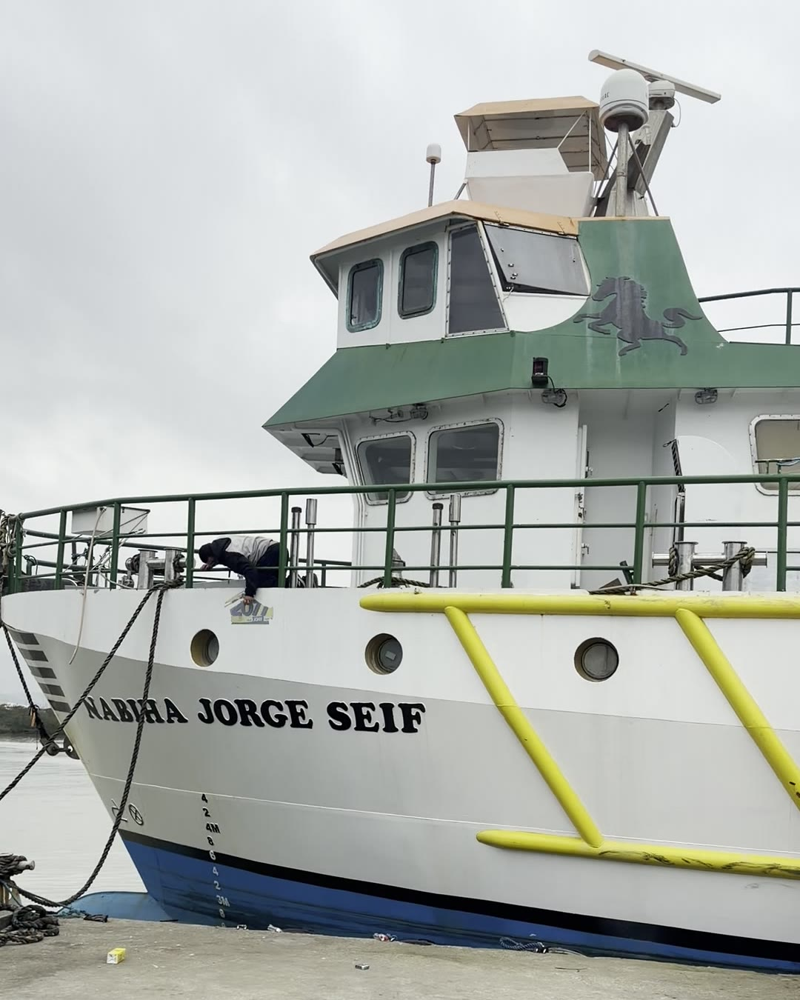
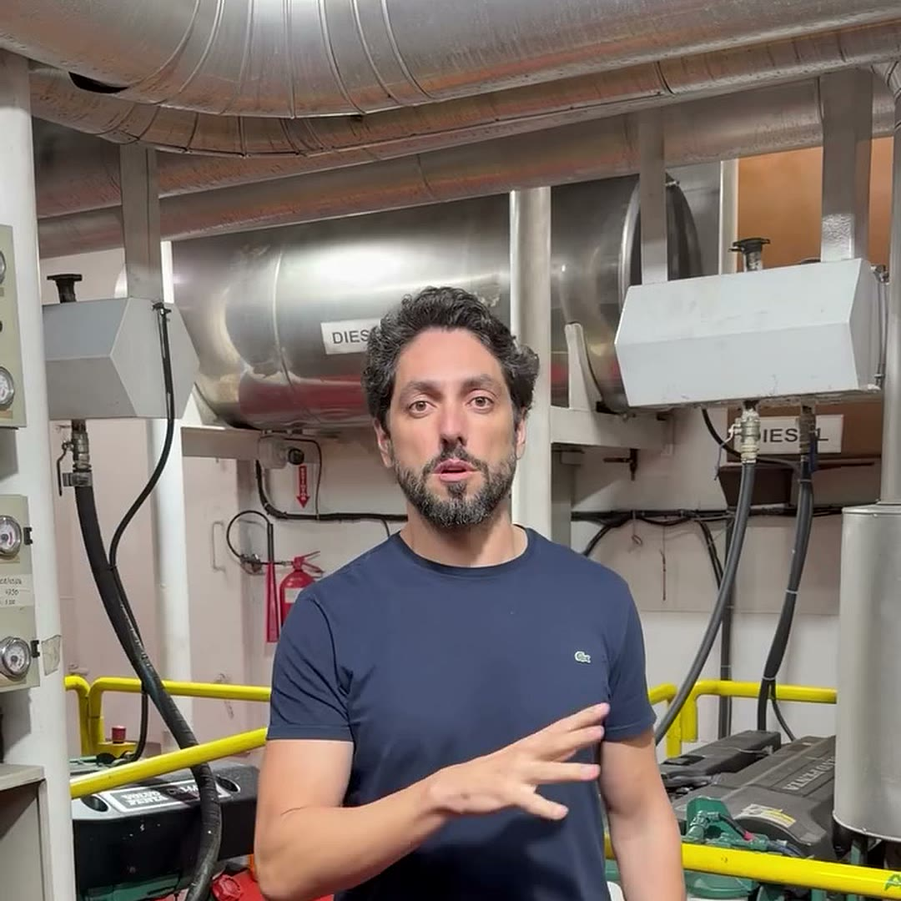
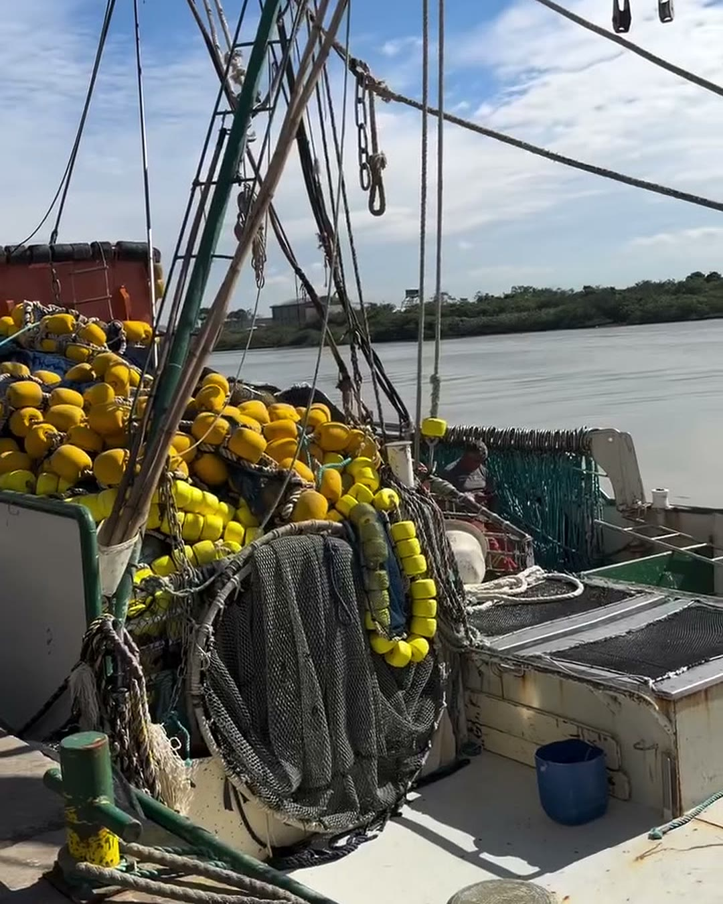
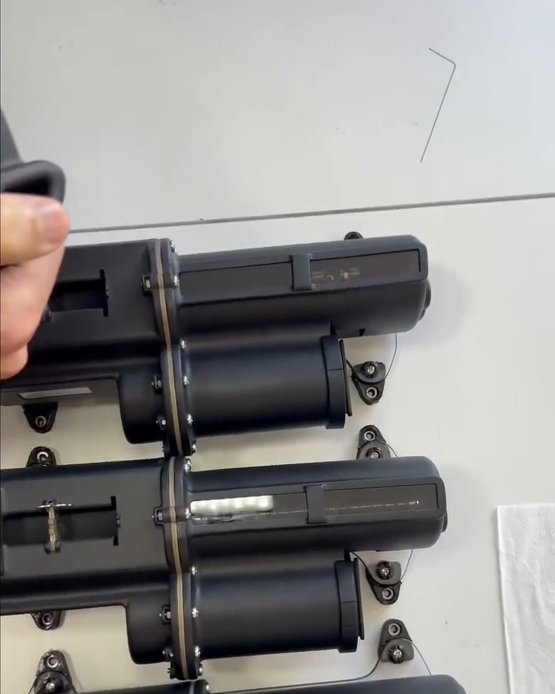
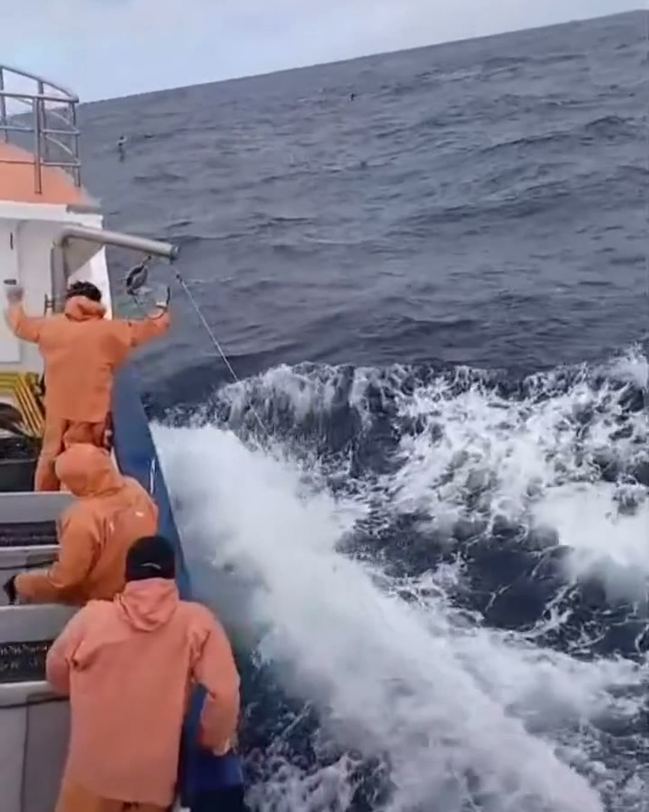
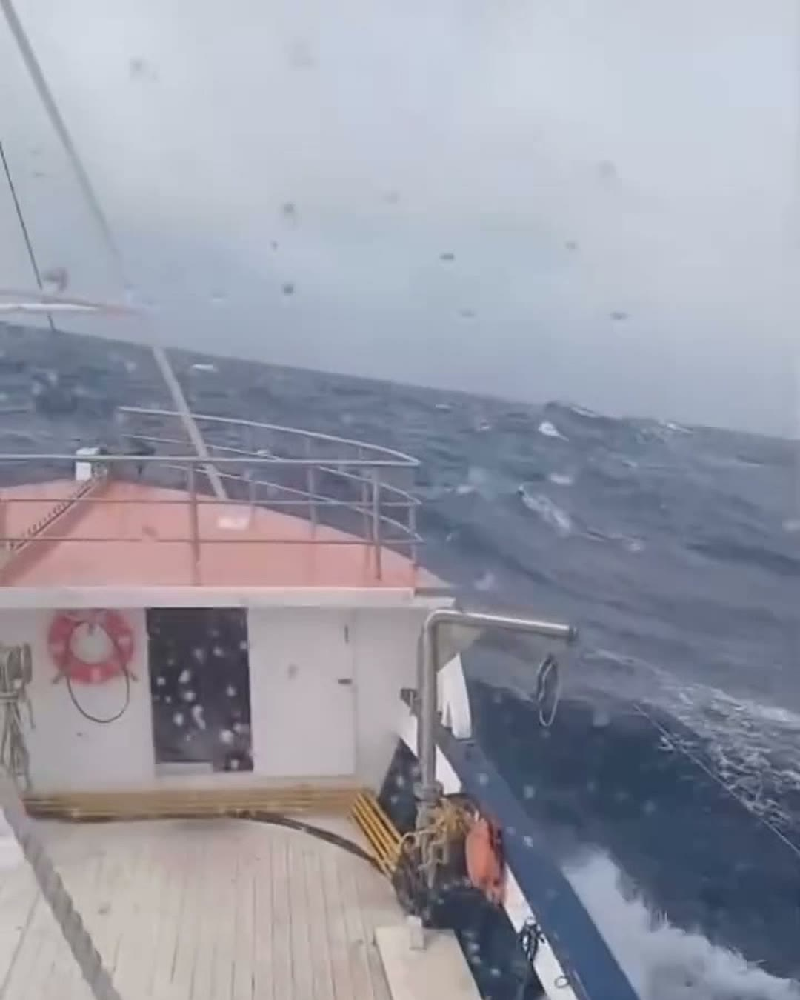
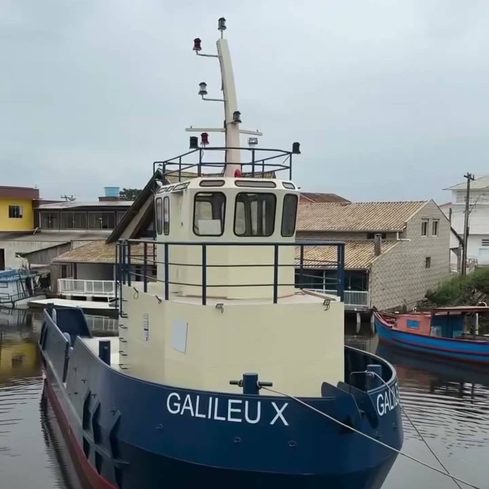
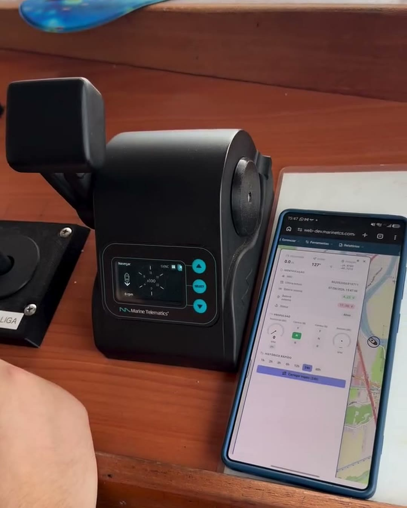
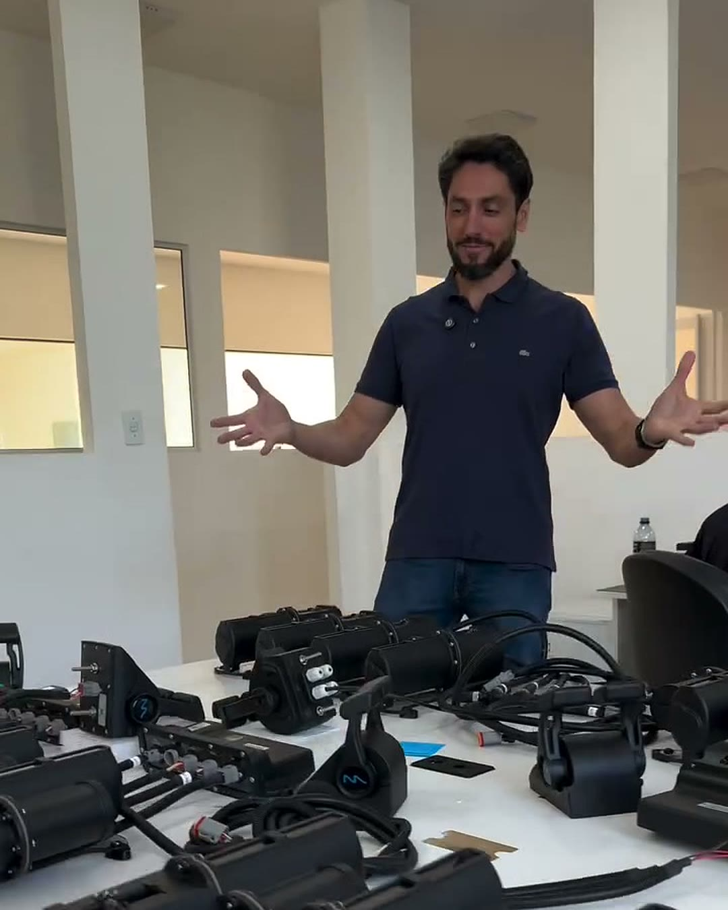
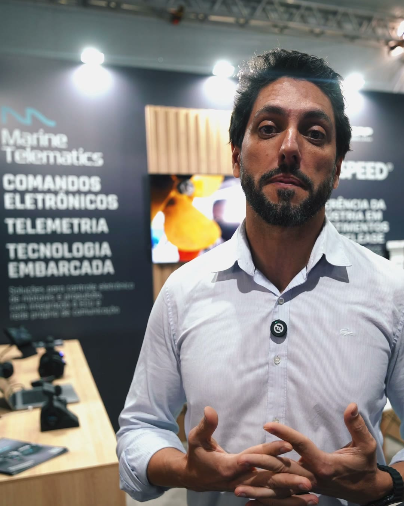

O maior pesqueiro do Brasil vai voltar ao mar com comando eletrônico feito em Santa Catarina
A Marine Telematics, de Florianópolis, converte comandos mecânicos em eletrônicos sem arrancar os cabos do barco e embarca telemetria que funciona por 4G ou satélite. A procura vai do polo pesqueiro de Itajaí aos rios da Amazônia.

No cais de Itajaí (SC), o Nabiha Jorge Seif está parado para reforma. Com 42 metros de comprimento, ele é considerado o maior barco pesqueiro do país e carrega oito motores Volvo, divididos entre propulsão, geradores, sistema hidráulico e processamento do pescado. Os dois motores de propulsão estão sendo trocados, e as estações de comando originais vão dar lugar a equipamentos desenvolvidos e fabricados a menos de 100 quilômetros dali, em Florianópolis, pela Marine Telematics.

O barco terá três postos de comando, na casa de máquinas, na ponte e na casa de verão, ligados entre si e aos motores por uma rede eletrônica que a própria empresa desenvolveu, a MTNet. No mesmo sistema entra a telemetria, que manda para terra os dados da operação.
“Esse projeto é muito importante para a gente, porque ele engloba praticamente todas as tecnologias que são úteis para embarcações de pesca”, diz Jairo de Abreu, fundador e CEO da Marine.
- 42mde comprimento do Nabiha, com oito motores e três postos de comando
- 40 a 50dias de viagem no atuneiro que opera com comando Marine
- até 10postos de comando numa mesma embarcação
- 120diasera o prazo mínimo do comando importado que levou à criação da empresa
Uma frota antiga a uma hora da fábrica
A Marine foi fundada em 2021, com foco em lanchas e iates. A entrada na pesca e nas embarcações de trabalho veio neste ano, num mercado que fica a pouco mais de uma hora de estrada da fábrica. Santa Catarina reúne 688 barcos de pesca industrial, mais de 32% da frota nacional, segundo o Sinaval, e Itajaí foi reconhecida por lei federal, em 2023, como Capital Nacional da Pesca.

Boa parte dessa frota foi construída nas décadas de 1980 e 1990, e o próprio setor descreve o nível tecnológico dos barcos como defasado. Embarcações dessa idade saíram do estaleiro com comando mecânico: alavanca, cabo de aço e força no braço de quem manobra.
O que muda no comando, e o que continua no lugar
No comando mecânico, a alavanca do comandante empurra e puxa dois cabos de aço, um para o acelerador e outro para o câmbio, que atravessam o barco até o motor. Numa lancha, o percurso é curto. Num pesqueiro, pode haver quatro ou cinco postos de comando na mesma embarcação.
“As distâncias são muito longas, os barcos em geral são de metal. Então tem alguns desafios técnicos ali”, explica Jairo. Cabo longo, com curvas e casco de aço pelo caminho, acumula atrito e sofre com a maresia, e a alavanca pesa mais justamente onde a manobra pede precisão.

Na conversão para o eletrônico, os cabos ligados ao motor continuam no barco. O que muda é quem os movimenta. A embarcação ganha um atuador, instalado junto ao motor, que recebe o sinal da estação de comando e faz o movimento dos cabos do acelerador e do câmbio. Entre o posto de comando e o atuador passa só sinal elétrico, e é por isso que a mesma embarcação pode ter até dez estações, segundo a empresa.
Na estação mais nova da linha, a CM255, lançada no fim de agosto, os atuadores passaram a ser ligados em rede, o que acabou com o limite de distância entre o posto de comando e o motor. Em barcos com motor eletrônico, como os do Nabiha, o comando conversa direto com a central do motor, a ECU, e o atuador não é necessário.
Entenda
Como o comando mecânico vira eletrônico
Antes · comando mecânico
Cada posto a mais é mais cabo, mais atrito e mais esforço no braço de quem manobra.
Depois · comando eletrônico em motor mecânico
Os cabos continuam no barco. Quem passa a movimentá-los é o atuador, que recebe o sinal da estação.
Depois · comando eletrônico em motor eletrônico
Sem atuador: a estação conversa direto com a central do motor. É o caso do Nabiha.
Nos dois casos, a telemetria usa a mesma rede do comando e envia os dados para terra por 4G ou satélite.
Doze horas de engate
O teste mais duro do equipamento, nas palavras de Jairo, está num atuneiro que sai do sul do Rio Grande do Sul e sobe até perto da linha do Equador. Cada viagem dura de 40 a 50 dias, e o motor só desliga de três a cinco horas por noite. No cerco da rede, o trabalho é engate atrás de engate, frente, neutro, ré e frente de novo, por horas seguidas e muitas vezes com mar grosso.
Até pouco tempo atrás, esse barco fazia tudo isso no comando mecânico.
Tu imagina ficar oito, dez, doze horas comandando uma embarcação naquelas condições. Isso dá uma tranquilidade muito grande, um conforto, reduz muito a fadiga do comandante.
Com o eletrônico, o curso da alavanca fica leve e igual do primeiro ao último engate do dia. Para Jairo, o efeito aparece no resultado da viagem: o comandante chega menos castigado ao fim do turno, decide melhor na hora do cerco e entrega uma pescaria “muito mais bem dimensionada”.


A conta da reversora
Em barco de trabalho, o prejuízo mais conhecido tem nome: caixa reversora. É a peça que sofre quando o operador passa de frente para ré com o motor ainda acelerado, e o tranco vai direto para a transmissão. Por isso os fabricantes recomendam engatar com o motor em marcha lenta, regra fácil de seguir no primeiro engate do dia e difícil de manter no centésimo.
Tarik, do time comercial da Marine, conta o caso de um armador com várias embarcações que o procurou com a conta feita:
Tarik, todo ano eu compro três, quatro, cinco reversoras.

A resposta da Marine foi a reversão automática do comando eletrônico, que tira o tranco da troca de marcha. “Não tem mais solavanco na caixa”, resume Tarik. O Galileu X, que acabou de descer do estaleiro, é um dos barcos dessa frota que vão receber o sistema, e parar esse barco custa caro, explica ele: “O ticket médio diário dela é bem alto.”
Trinta dias no mar, com o armador acompanhando de terra
Um barco de pesca pode passar 30 dias longe da costa, e até pouco tempo o que o armador sabia da viagem era o relato da tripulação na volta. Jairo diz que a telemetria é “talvez a principal função que o mercado de pesca pede”.

Nos barcos equipados pela Marine, o sistema registra rota, operação do motor e acionamento das bombas hidráulicas. Perto da costa, os dados sobem por 4G; longe dela, por satélite, via Starlink. Um dos pesqueiros atendidos chegou perto da linha do Equador transmitindo.
No celular, em modo armador, o dono acompanha em tempo real rotação, temperatura, consumo em litros por hora, posição do engate, horas de motor, localização e alarmes. Há também cerca virtual: se o barco entra numa área proibida, como uma reserva marinha, o aviso chega à plataforma e ao WhatsApp do dono ou do administrador da embarcação. O mesmo acontece quando o barco perde contato com o servidor, em geral depois de 20 a 30 minutos. “As multas são literalmente milionárias”, diz Jairo, sobre a pesca em área protegida.
Barcos de maior porte já levam a bordo o rastreador por satélite do PREPS, o programa federal de monitoramento da frota pesqueira, que informa à fiscalização onde a embarcação está. A telemetria do comando responde a outra pergunta, a que interessa ao armador: como o barco está sendo operado.
Na Amazônia, o rio é a estrada
A mesma lógica chega aos rios do Norte, onde barco é transporte e ganha-pão. Um estudo da Antaq com a Universidade Federal do Pará estimou que o transporte fluvial no Pará, no Amapá, no Amazonas e em Rondônia levou cerca de 9,8 milhões de passageiros e 3,4 milhões de toneladas de carga em 2017. Barcos de passageiros, balsas, empurradores e embarcações mistas fazem esse trabalho todos os dias, muitas vezes com mais de um posto de comando e com um comandante contratado no leme.
Desde o começo de setembro, pedidos de avaliação passaram a chegar de Manaus, Belém e Santarém. Para o dono que não está a bordo, a telemetria funciona como o diário da viagem, com horas de motor, rotação, consumo e posição registrados dia a dia. Nos trechos sem sinal de celular, os dados seguem por satélite. E a peça de reposição sai de Santa Catarina, sem esperar importação.
Nasceu de um problema no próprio barco
A Marine começou com um problema do fundador. Jairo tinha dois barcos, de 43 e 58 pés, e os comandos dos dois falharam: o menor era mecânico; o maior, eletrônico. Quando procurou um sistema para converter o mecânico, só encontrou fabricantes nos Estados Unidos e na Europa.
“Descobri que não existia nenhum equipamento fabricado no Brasil, pelo menos para o mercado de lazer. O prazo de entrega era de pelo menos 120 dias”, conta. Também não havia rede de instalação no Sul, e alguém teria de vir de São Paulo para fazer o serviço.

Dono de uma empresa de tecnologia, ele separou dois ou três programadores e começou a desenvolver o próprio equipamento. Hoje a linha inclui estações para um e dois motores, como a CM255, a CM300HD e a CM400PRO, além de atuadores, conversores e módulos que substituem peças originais de motores eletrônicos, como os da Volvo. Os comandos trabalham com motores Volvo, Yamaha, Mercury, MAN, Cummins, Caterpillar e Yanmar, entre outras marcas.
A montagem das placas eletrônicas, que dependia de outra empresa, passou para a linha própria, numa máquina que posiciona sete mil componentes por hora. Na mesa de montagem, cada kit sai configurado com o número de estações e de motores do barco que vai recebê-lo.

Quem é
Jairo de Abreu
Fundador e CEO da Marine Telematics. Empresário do setor de tecnologia, criou a Marine em 2021, em Florianópolis, depois de descobrir que o comando importado para os próprios barcos levaria pelo menos 120 dias para chegar.
Para quem opera barco de pesca ou de trabalho, a avaliação começa pelo WhatsApp, com três informações em mãos: quantos motores o barco tem, quantos postos de comando e se o motor é mecânico ou eletrônico. É com elas que a equipe técnica diz se o projeto leva atuador ou se o comando fala direto com a ECU.